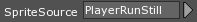
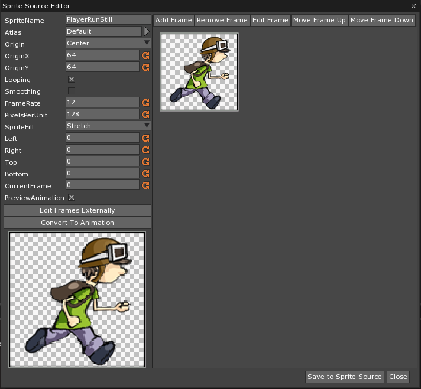
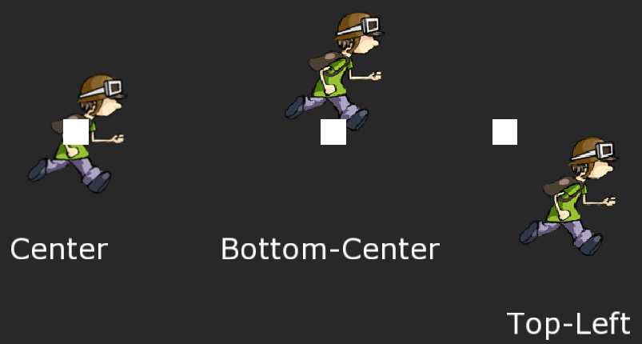
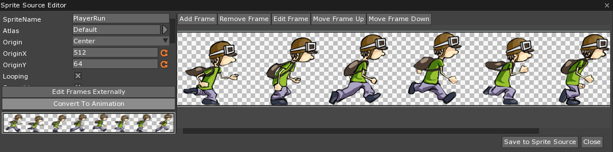
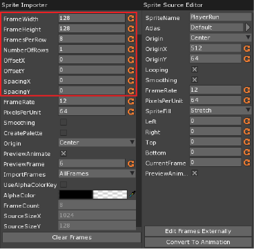
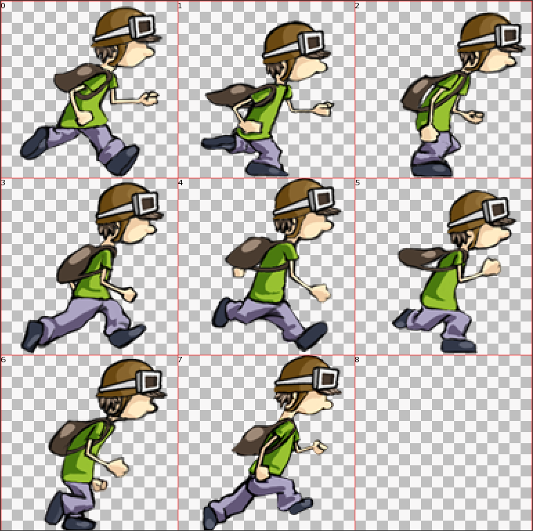
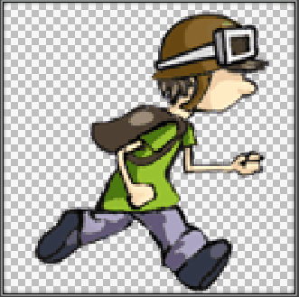
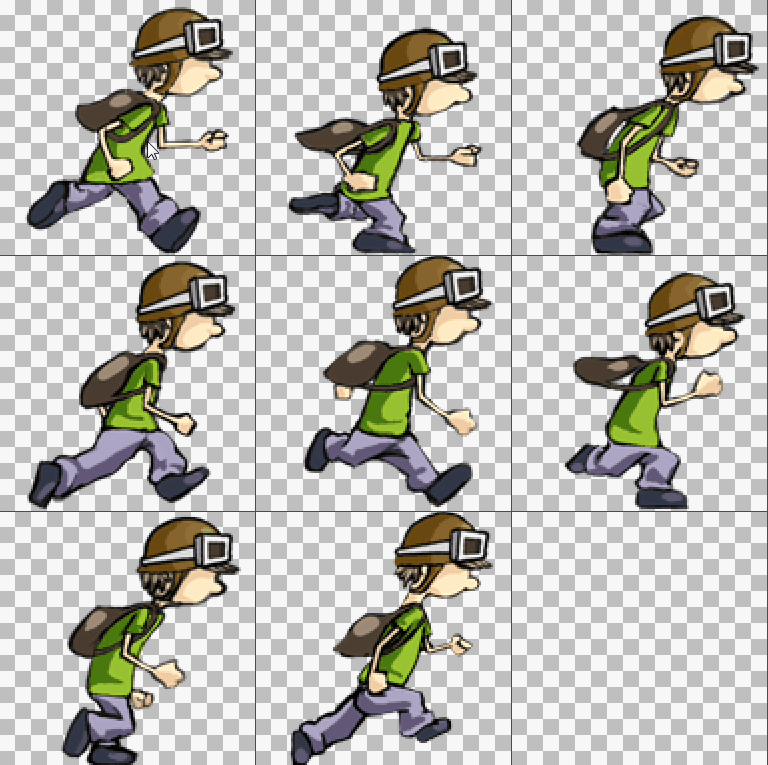
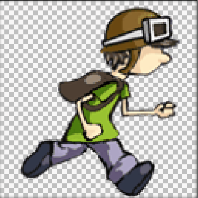

Sprite Source Editor
Frequently, when a SpriteSource has been imported into Zero, it still needs some minor modifications; this is where the Sprite Source Editor comes into play. This can be used not only to make changes to the SpriteSource, but also to cut a SpriteSource into multiple Sprites or animate a Multi-Frame Sprite.
Common Uses
- Making small adjustments to SpriteSources
- Taking multi-frame SpriteSources and creating Sprite Animations
Using the Sprite Source Editor
Once the SpriteSource has been imported, the Sprite Source Editor can be opened by going into the Library tab and double clicking on the SpriteSource that needs to be edited. It can also be opened by clicking on the small grey arrow next to the SpriteSource Property, as seen below on the Sprite Component.


The Editor allows control over the base properties of each SpriteSource, such as its name, pixels per unit, and origin. The Origin property will place whichever point on the Sprite that is chosen at the coordinates chosen in the Transform Component. It is also possible to use OriginX and OriginY to set the origin in a specific spot, as opposed to one of the four preset options. All of the Sprites below, for example, have had their Origins changed while the position of their Game Objects are represented by the white Sprites.

The Editor also allows control over two very important aspects of Sprites: setting Background images and Scaling Properties of Sprites, both of which are covered in Area Component, and creating SpriteAnimations.
Creating Sprite Animations
By taking a SpriteSource that has multiple frames and opening it in the Sprite Source Editor, it is possible to turn it into a moving animation. The first step is to click on Convert To Animation and make some adjustments.

While a majority of the information is the same as that found in the Sprite Source Editor, there are a few very important differences highlighted here:

While all of these options are important, the most commonly used ones will be one or two of the first four: FrameWidth, FrameHeight, FramesPerRow, and NumberOfRows. If it’s known what the Height and Width of each frame is intended to be, then by putting that into FrameWidth and FrameHeight it will calculate how many Rows to break the original image into as well as how many Frames are in each Row. Likewise by setting the NumberOfRows and FramesPerRow it will calculate what the Width and Height of each Frame should be.
OffsetX, OffsetY, SpacingX and SpacingY, meanwhile, are used to fine tune the Animations. OffsetX will move the starting point of the first frame forward, which will also push every other frame forward by the same amount. OffsetY has a similar function, except that it moves the top of each row down by that amount. SpacingX and SpacingY do not effect the first Frame or Row, but rather adds a space in between each instead.
At this point, if the animation is playing properly, it’s simply a matter of clicking either Add and Close or Add and Continue to add the animations as SpriteSources. Add frames as Sprites will add each individual frame as its own SpriteSource, and Close will close the window and discard all work done to the SpriteSource. This assumes, however, that everything connects properly, which may not always be the case. For example:

The SpriteSource above has an empty frame at the end; if every frame is used the following animation will be produced:

Obviously, this is not the desired result. Therefore, instead of choosing to use all frames, by changing ImportFrames to SelectedFrames it becomes possible to choose only the frames wanted, which will then be placed in the order the frames are chosen.

Selecting the frames in this order will leave out the blank frame at the end, and create a SpriteAnimation of the remaining frames in their chosen order.

If your SpriteSource doesn’t have a blank background, it’s possible to use the Sprite Importer to erase the background color. Simply set the AlphaColor Property to the color that needs to be erased (this is the perfect application for the EyeDropper tool), and set UseAlphaColorKey to True. On importing the Sprite, the color chosen will be erased.